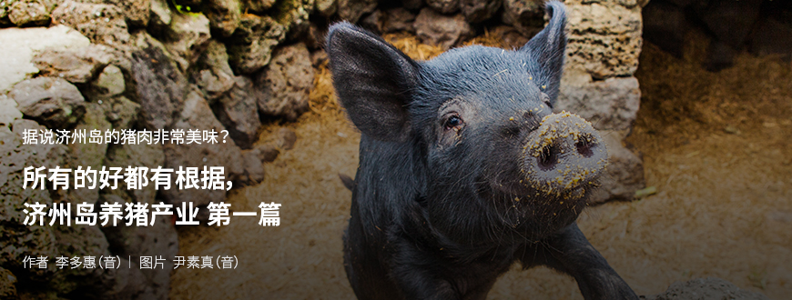
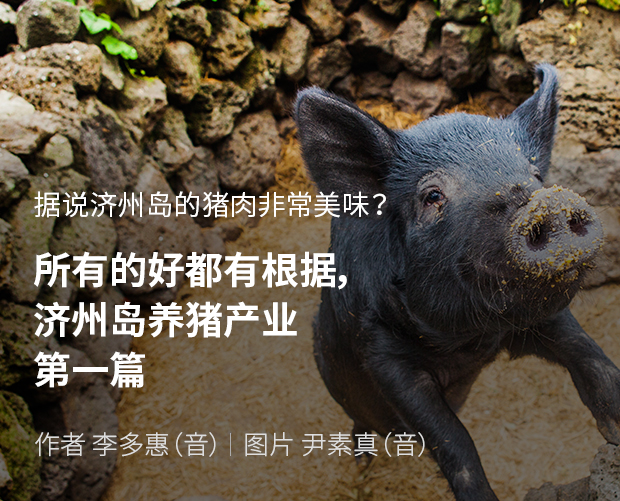
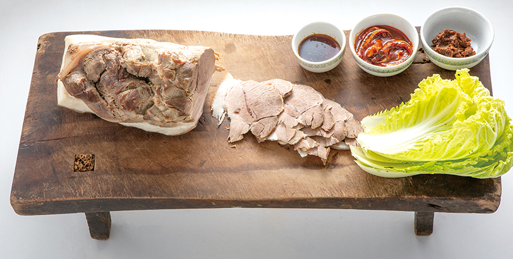
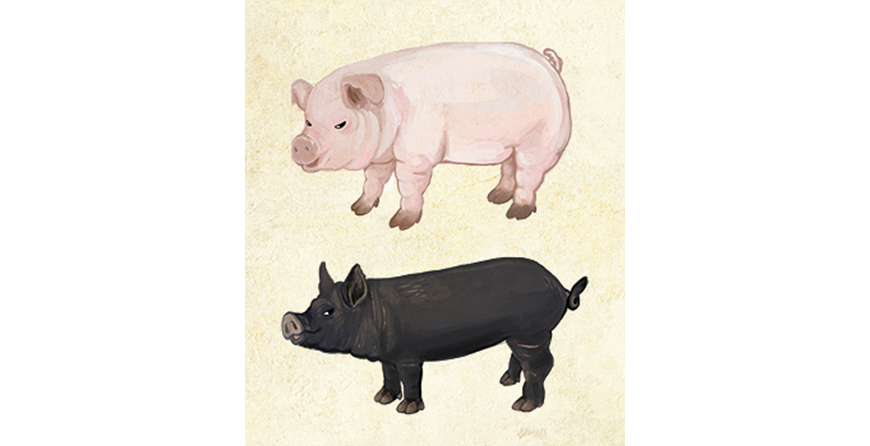
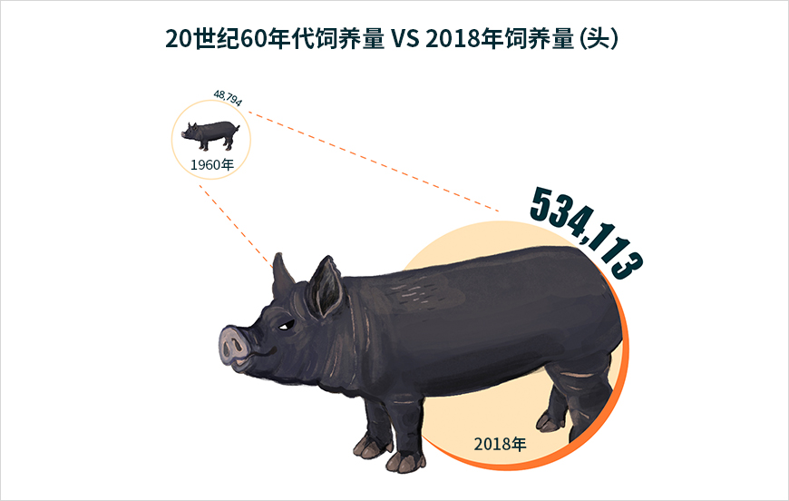
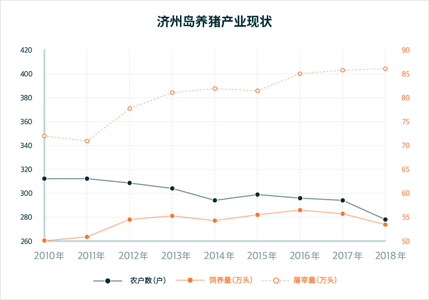
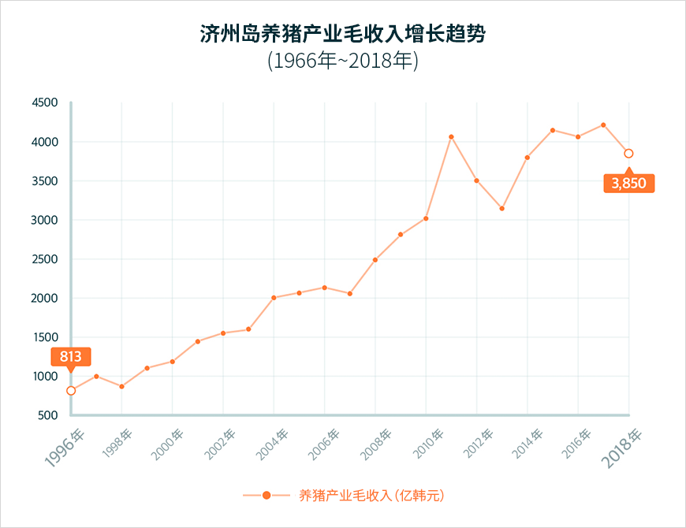
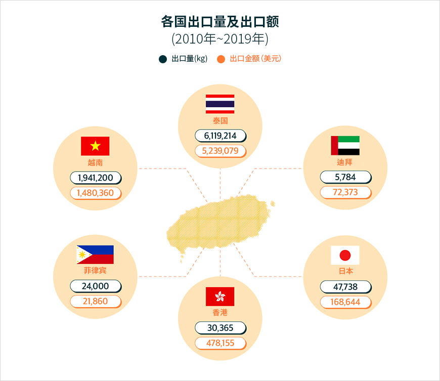

기획취재콘텐츠
- Home
- 제주라이프
- 기획취재콘텐츠
所有的好都有根据，济州岛养猪产业 第一篇새로운 글


他有着亮泽的黑色，耳朵小，向上翘起的可爱外貌，健壮的身躯和短而有弹性的腿，与经常想起的猪的形象截然不同。 不只是外貌不同。浓艳鲜明的肉色加上嚼起来味道好，香喷喷的味道吸引了众人的口味。 一提到济州，人们就会想起代表性的食物是济州黑猪肉。
对于济州岛岛民来讲，猪肉的意义远不止于食材。以前，济州岛的每家每户都会搭有饲养黑猪的“通西（猪圈兼厕所）”，用来处理粪便和食物垃圾、生产堆肥、防御蛇等。此外，对于在过去很难补充蛋白质的济州岛岛民来讲，在通西中饲养的传统黑猪也成为了优秀的蛋白质来源。

- 砧板白切黑猪肉是将煮的清淡的猪肉放在砧板（菜板）上，切成便于食用的大小，
在济州岛举办宴会时必不可少的传统猪肉料理。 ⓒ才艺商会 -
在济州岛举办宴会时必不可少的传统猪肉料理。 ⓒ才艺商会 -
直到现在，代表济州岛的传统饮食中也少不了以猪肉为食材的料理。济州岛的黑猪肉甚至占据了游客最喜爱的济州岛传统美食排行榜第一位，作为济州岛美食之旅的代表性食材，一直备受欢迎。济州岛产猪肉作为代表韩国的高级食材，其地位不可撼动。
济州岛猪肉的产业化
제济州岛养猪产业在20世纪60年代以后持续成长，如今已成为了名副其实的负责济州岛经济支柱的第一产业。那么，主要是在家庭和村庄饲养、作为饮食文化的济州岛猪肉是如何成长为了支撑济州岛经济的产业呢？
这就要追踪到圣伊西多尔牧场。1954年来到韩国的爱尔兰籍神父帕特里克•詹姆斯•麦克林奇（Patrick James McGlinchey）看到济州岛得天独厚的自然环境，以及以猪肉为中心发展的共同体和饮食文化，发现了养猪业的可能性。于是在20世纪60年代初期，从首尔空运了两千多头猪崽到济州岛。此后，麦克林奇神父通过成立伊西多尔协会、发掘养猪农户的地区开发事业、可产出优质猪肉的种猪转让事业，以及培养可用优质种猪饲养优质猪肉的农民与可系统性的流通济州岛优质猪肉的合作社合作等多方面的努力，奠定了济州岛养猪产业的基础。

- 插图:李素贤 -
目前，济州岛饲养着50多万头猪。其中黑猪有14多万头，约占总数的25%。济州岛的白猪是猪肉产业化后引进的品种，大部分是将有嚼劲的兰德瑞斯猪与体型较大、繁殖和哺乳能力优秀的约克夏猪、味道浓郁的杜洛克猪杂交的LYD（三元杂交）品种。
济州岛的传统黑猪于2015年被指定为了天然纪念物，由济州特别自治道的畜产振兴院来饲养和保护。市面上销售的黑猪都是将传统黑猪与农户的改良品种进行交配，提高了生产效率的商业化黑猪。济州岛的农户会育种并饲养将味道和品质优秀的传统黑猪与体型大且优质的汉普夏猪、肉质柔嫩的巴克夏猪、杜洛克猪等杂交的杂交种猪。
济州岛畜产振兴院于1997年新建了9千坪（约29,700平方米）规模的种猪场，为改良优质种猪，每年都会进口高品质原种猪供应给农户，鼓励农户生产出优质猪肉。






※ 资料提供 济州特别自治道道厅农畜产食品群畜产科
以这种系统的养猪产业培育和种猪育种为基础，济州岛养猪产业仅用产业化后的50多年，就与柑橘产业、旅游产业一起成长为了济州岛经济的轴心产业。
2018年，济州岛内的猪饲养量为534,113头，对比养猪产业起步的20世纪60年代的48,794头，增长了12倍以上。2010年以后，济州岛屠宰的猪已经达到了年平均80万头。养猪产业的毛收入从1996年的813亿韩元增长到了2010年以后的约4千亿韩元，占据了畜牧业平均总收入9千亿韩元的45%。
济州岛屠宰的猪肉有30%是在岛内流通，70%是在岛外流通，但最近不仅是在韩国销售，也会销往国外，扩大着销售范围。

各国出口量及出口额(2010年~2019年)
| 各国 | 出口量(kg) | 出口金额(美元) |
|---|---|---|
| 泰国 | 6,119,214 | 5,239,079 |
| 迪拜 | 5,784 | 72,373 |
| 日本 | 47,738 | 168,644 |
| 香港 | 30,365 | 478,155 |
| 菲律宾 | 24,000 | 21,860 |
| 越南 | 1,941,200 | 1,480,360 |

※ 资料提供 : 济州特别自治道道厅农畜产食品群畜产科
出口的主要商品是猪肉副产品和肉脯、火腿、炸猪排等猪肉加工品。 主要出口国是泰国、越南、香港、日本等，从2010年到2019年，共出口了约8千多吨猪肉副产品和加工品。 10年间，养猪相关的出口业绩达到了746万美元。 从2017年开始，不仅是副产品，猪肉也出口。 特别是2018年，首次向中东市场迪拜出口了济州猪肉。 考虑到当地内需市场几乎没有猪肉消费的情况，这是令人刮目相看的成果。
养猪产业的成长对济州岛的经济也直接或间接地带来了极大影响。能够提供饲养优质猪肉的环境，为济州岛的猪肉相关餐饮产业做出了贡献。
이전글
다음글